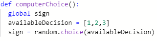
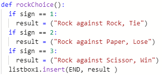

The overall purpose of the program is to simulate a game of rock paper scissors. The functionality demonstrated in the video is the ability to play three different signs in the game. The input is the button click of either rock paper or scissor, and the output would be the outcome of the game.
 The name of the list used in the program is computerChoice. The data in the list represents the three signs you can throw in a game of rock paper scissor. Each individual list value represents a sign which can be played in the game. A random value is selected every time there is an input. Without this list, there would be no computer opponent to play against.